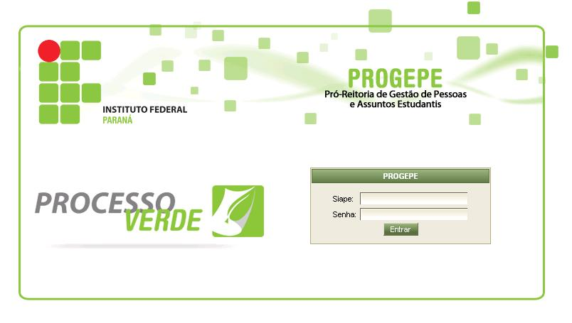

Manual Do Usuário
Alteração Dados Cadastrais

Esta tela é composta por 5 abas (Dados Pessoais, Dados Funcionais,Documentos, Contato, Conta Bancária e Salvar )
Aba Dados Pessoais
Campo
Descrição
Obrigatório
Nome
Nome de acordo com o CPF
SIM